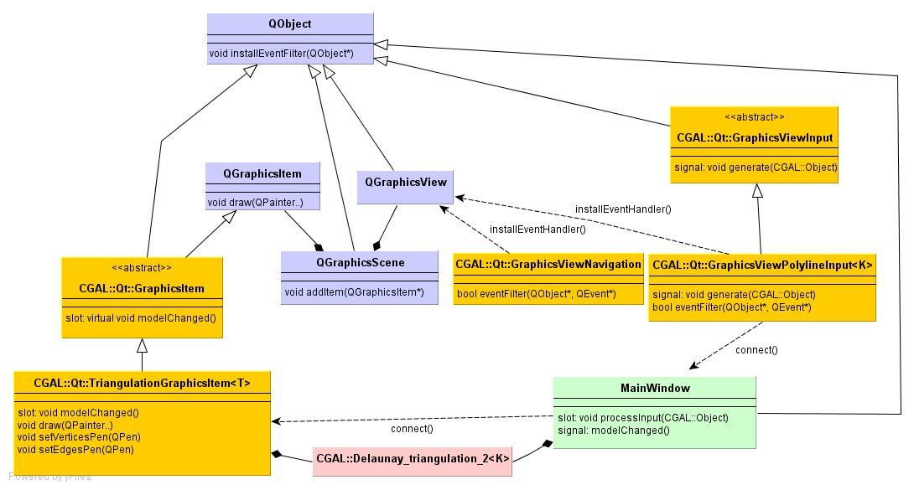

|
CGAL 6.1.3 - CGAL and the Qt Graphics View Framework
|
Loading...
Searching...
No Matches
|
CGAL 6.1.3 - CGAL and the Qt Graphics View Framework
|
Qt is a Gui toolkit for cross-platform application development.
This chapter describes classes that help to visualize two dimensional CGAL objects with the Qt Graphics View Framework.
This framework uses the model view paradigm. QGraphicsItems are stored in a QGraphicsScene and are displayed in a QGraphicsView. The items have a paint method which is called when an item is in the visible area of a view. The framework is also responsible for dispatching events from the view via the scene to the items. The framework is extensible in the sense that users can add classes derived from QGraphicsItem.
Besides visualizing QGraphicsItems users want to enter geometric objects. We provide the input generators for all 2D CGAL Kernel objects.
The package includes also a class for providing zooming, panning, and scrolling to the graphics view.
The following sections describe the interaction between all these classes, We finally describe the internals of a QGraphicsItem.
As Qt and CGAL have different naming conventions, and as this package brings them together we adopted the following, hybrid naming conventions.
In Figure 119.1 you see four classes depicted in grey, that come from the Qt Graphics View Framework. The QGraphicsScene contains QGraphicsItems, which get displayed in any number of QGraphicsViews. The views are widgets, that is they take screen space in an application.
The fourth class is the QObject. It plays an important role in Qt for event handling and memory management. First, it allows to add signals and slots, and to connect them. Second, it allows to install event filters.

Figure 119.1 UML Class Diagram with the Qt classes (blue), CGAL classes for using the framework (yellow), CGAL data structures (red), and application classes (green).
In order to visualize for example a CGAL::Delaunay_triangulation_2, we provide the graphics item class CGAL::Qt::TriangulationGraphicsItem<T>. It provides a paint method that draws the edges and vertices of a triangulation using the drawing primitives of the QPainter. The color of vertices and edges, can be chosen by setting a user defined QPen.
As this graphics item only stores a pointer to a triangulation, it must be notified about changes like the insertion of points coming from a file, a process or as input generated with the mouse. We use the signal/slot mechanism of Qt for that purpose, that is when the triangulation changes the application emits a signal that can get connected to the modelChanged() slot of the graphics item.
We provide a class CGAL::Qt::GraphicsViewNavigation that can be installed as an event filter of a graphics view and its viewport. As for all Qt widgets, the QGraphicsView is derived from QObject. Events like the mouse buttons pressed or released, the mouse movemed, keys pressed, are passed to the view which first hands them over to the event filter. The CGAL::Qt::GraphicsViewNavigation event filter allows to zoom, scroll, and recenter. Finally, the class emits a signal with the mouse coordinates. This can be used to display the current mouse position in the status bar of an application.
Input of CGAL Kernel objects, polylines, etc. is generated by classes derived from CGAL::Qt::GraphicsViewInput. As the navigation class, they are event handler of the graphics view, because they have to know where the mouse is, when the user clicks in order to enter a point.
Once the input generator has assembled the object, which can involve several mouse clicks, it emits a CGAL::Object wrapping the input. The emitted input can be connected by the application developer to a slot. In the 2D demos of CGAL, which use the Graphics View Framework we connect it to the slot MainWindow::processInput(CGAL::Object). This method unwraps from the CGAL::Object and inserts it in the data structure. It then typically emits a signal modelChanged() which can be connected to the graphics item representing the data structure.
All input generators we provide use the left mouse button for entering points. The right click terminates a sequence of entered points. 'Delete' and 'backspace' remove the last entered point. 'Esc' resets the input generator. As the 'Ctrl' key is used by the CGAL::Qt::GraphicsViewNavigation this modifier is not used.